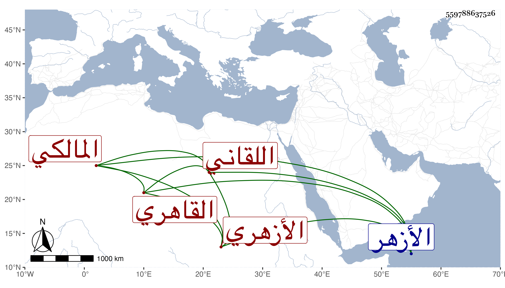

0902Sakhawi.DawLamic.ITO20230111-ara1.EIS1600.559788637526
Biography ID: 559788637526
415
عمر بن محمد بن موسى بن عمر بن عوض بن عطية بن أحمد بن محمد بن عبد الرحمن السراج بن الشمس بن الشرف اللقاني ثم القاهري الأزهري المالكي الآتي أبوه وجده . مات في ذي القعدة سنة ثمانين عن ثلاث وخمسين فأكثر وصلي عليه في الأزهر ، وكان غالب عمره يتكسب بالشهادة في حانوت بالمكارية بالقرب من الأزهر إلا شهرا في أول ولاية قريبه البرهان الماضي قضاء المالكية لمباشرته النقابة نيابة فيها ثم جاء الأمر بمنعه فعاد إلى حاله ، وهو ممن سمع على شيخنا ولم يكن بالمحمود سامحه الله وإيانا .
